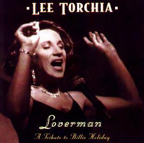
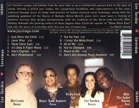

Jazz Raga Recording
Scott Yanow, The Jazz Singers, The Ultimate Guide:
"Lee Torchia has in recent years sought to mix together jazz with Indian music, calling it 'jazz raga.' Years earlier she recorded a fine album, now reissued as the CD Lover Man (Jazz Raga 001), with tenor-saxophonist Ricky Ford, pianist Ram Ramirez, bassist Milt Hinton and drummer Mel Lewis. She pays tribute to Billie Holiday through her repertoire rather than trying to copy her, and the results are rewarding." — www.scottyanow.com


The Artists
- Mel Lewis - Drums
- Roger "Ram" Ramirez - Piano
- Ricky Ford - Sax
- Lee Torchia - Vocals
- Milt "The Judge" Hinton - Bass